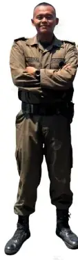
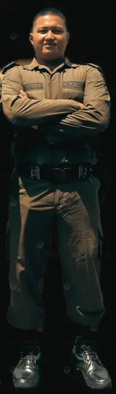
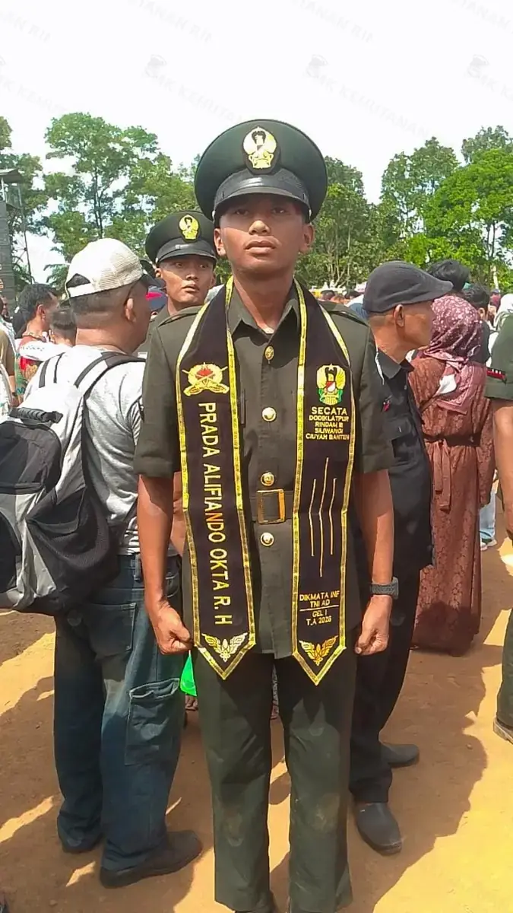
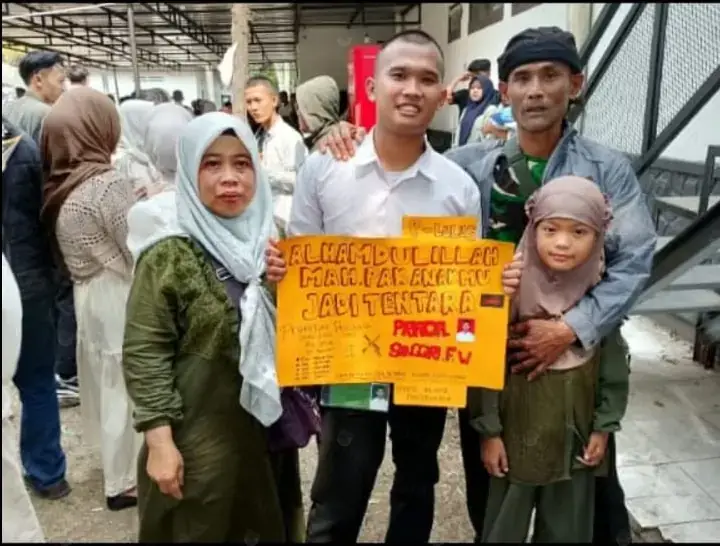
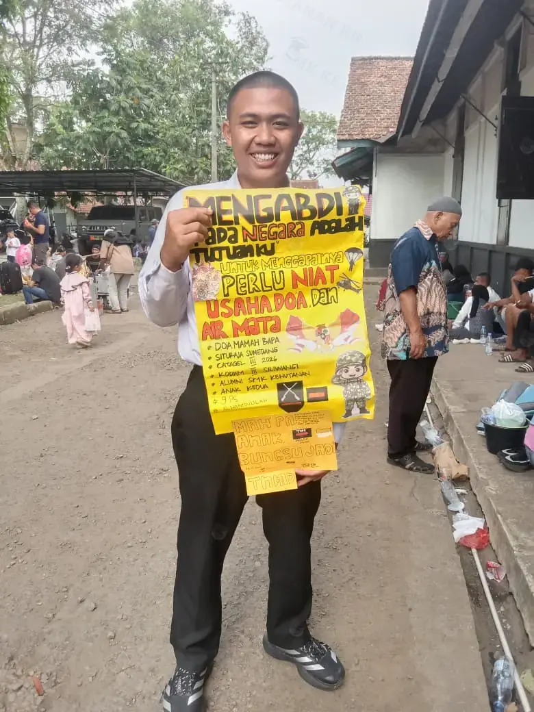

Versi uji lokal. Foto asli tidak diubah; hasil watermark dibuat sebagai WebP baru.

alumni-agra.webp
alumni-dzaki.webp
alumni-alifiando-oktaramadhansyah-hamid.webp
alumni-sanggiri-furnama-wiguna.webp
alumni-muhammad-adi-firmansyah.webp